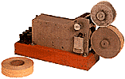

- real -
|
In his series of four paintings, Jan van Kessel portrayed cultural knowledge representations of the four continents known in his day. The immaterial character of these virtual antarctic 'substance' can only develop meaning and effectiveness (much as in the 17th century) if these items are developed in independent constructs, which never the less remain in distance but related to their antarctic reference subjects. As the given empirical facts are both real and fictitious, the data space give rise to phenomena which are difficult to conceptualize - a Computer Aided Reality. These data-bodies incorporate data sets of current antarctic research projects, which symbolize direct real-time links to the reference subjects occurring in scientific research and the underlying natural events at the South Pole. The visitor navigates parallel in a global area in the Internet as well as in a local computed model of the DTWKS environment at ISEA. |
 |
In his series of four paintings, Jan van Kessel portrayed cultural knowledge representations of the four continents known in his day. The immaterial character of these virtual antarctic 'substance' can only develop meaning and effectiveness (much as in the 17th century) if these items are developed in independent constructs, which never the less remain in distance but related to their antarctic reference subjects. As the given empirical facts are both real and fictitious, the data space give rise to phenomena which are difficult to conceptualize - a Computer Aided Reality. These data-bodies incorporate data sets of current antarctic research projects, which symbolize direct real-time links to the reference subjects occurring in scientific research and the underlying natural events at the South Pole. The visitor navigates parallel in a global area in the Internet as well as in a local computed model of the DTWKS environment at ISEA. |
 |
In his series of four paintings, Jan van Kessel portrayed cultural knowledge representations of the four continents known in his day. The immaterial character of these virtual antarctic 'substance' can only develop meaning and effectiveness (much as in the 17th century) if these items are developed in independent constructs, which never the less remain in distance but related to their antarctic reference subjects. As the given empirical facts are both real and fictitious, the data space give rise to phenomena which are difficult to conceptualize - a Computer Aided Reality. These data-bodies incorporate data sets of current antarctic research projects, which symbolize direct real-time links to the reference subjects occurring in scientific research and the underlying natural events at the South Pole. The visitor navigates parallel in a global area in the Internet as well as in a local computed model of the DTWKS environment at ISEA. |
|  |
. These models are complex dynamic fields, which produce an exchange between virtual agents, poetic machines and interactive visitors. Knowbotic Research outlines technoid events parallel in real and virtual spaces to investigate the experience of the multiple layers of reality. The organization is based in Cologne at the Academy for Media Arts. With the partners of Westbank Industries and Tactile Technology Knowbotic Research has founded mem_brane, a laboratory for media strategies. |
read more at: http://www.real.com/4plus/trinity_.css